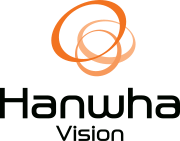
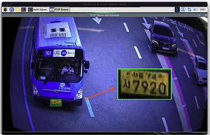
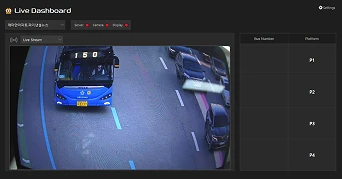
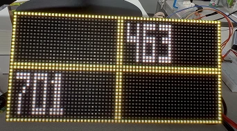

협업 프로젝트
버스 봄
프리뷰
개요
- 프로젝트 기간
- 2025.06 – 2025.08
- 개발 인원
- 4명
- 프로젝트 목적
- 비전 시스템을 통해 정류장으로 접근하는 버스를 실시간 감지하고,
이를 통해 승객들을 적절한 승차 위치로 안내하는 스마트 정류장 임베디드 시스템 개발 - 프로젝트 내용
-
- 정류장 접근 버스 실시간 탐지 & 승차 위치 예측
- 정류장 접근 버스 객체 탐지 및 번호판 OCR 수행
- 정류장 점유 상태 모니터링 및 정차 위치 예측
- 전용 관제 애플리케이션 & 전광판 승객 안내
- 원격 라이브 스트리밍 및 CCTV 카메라 설정
- LED 전광판 안내 + 스피커 음성 안내
- 정류장 접근 버스 실시간 탐지 & 승차 위치 예측
- 상세 역할
-
- 디바이스 제어용 서버 & CGI 애플리케이션 구현
- RTSP 스트림 + 메타데이터 동기처리 및 영상 디코딩 & 렌더링 구현
- 디바이스 아키텍처 & 인터페이스 설계 (HTTPS, IPC)
- 성과
- 최종 프로젝트 우수팀
- 한화비전 VEDA 2기 최종 프로젝트 발표회 우수팀 선정
기술 스택
- C/C++ 디바이스 SW 전반
- Qt 관제 클라이언트
- FFmpeg RTSP 수신 · 디코딩
- OpenCV OCR 이미지 전처리
- SDL2 영상 렌더링
- Nginx + FastCGI HTTPS 웹 서버 · 디바이스 제어 CGI
- TFLite 번호판 OCR 추론
- RPi4 디바이스 하드웨어
주요 기능
-
정류장 접근 버스 실시간 탐지 & 승차 위치 예측
- 접근 버스 객체 탐지 및 번호판 OCR 수행
- 정류장 점유 상태 모니터링 및 정차 위치 예측
핵심 구현 과제
- 임베디드 환경에서 실시간성과 정확성 동시 확보
- 영상 처리 · 분석 및 정차 위치 예측 로직 구현

-
전용 관제 애플리케이션
- 원격 라이브 스트리밍 및 CCTV 카메라 설정
- 주 · 보조 카메라 화면, 시스템 설정
핵심 구현 과제
- 디바이스 제어용 네트워크 요청 처리 구현

-
LED 전광판 · 스피커를 통한 승객 안내
- 플랫폼 내 도착 예정 또는 도착 버스 안내, 현재 시각 안내
핵심 구현 과제
- 관련 하드웨어 제어(드라이버 · 펌웨어) 구현

구현 과정
RTSP 스트림 멀티스레드 디코딩
단일 스레드 → 4단계 파이프라인, 5–6fps → 11–15fps
PC 환경처럼 고수준 FFmpeg API를 쓰는 방식으로는 임베디드 환경에서 충분한 영상 품질과 실시간성을 함께 확보하기 어려웠습니다. 멀티스레드와 저수준 FFmpeg API를 활용한 최적화로 성능 제약 환경에서도 최선의 영상 처리 성능을 끌어내는 것이 목표였습니다.
확인된 문제
- 임베디드 환경(Raspberry Pi 4 SoC)의 성능 제약 — PC 환경에서는 없던 디코딩 & 렌더링 지연
- 특정 연산 단계의 병목 — I/O, OCR 등 다른 태스크와의 실행 시간 불균형으로 패킷 유실, 키프레임 누락, 렌더링 지연 발생
- 결과적으로 렌더링된 영상에 블록 노이즈 · 프레임 드랍, 최대 1초 수준의 지연(latency) 발생
해결 · 개선
- 단일 스레드 → 4개 스레드 파이프라인(
stream·decode·render·ocr)- 파이프라인 병렬성으로 CPU 연산 극대화, 네트워크 I/O 블로킹 격리
- ThreadSafeQueue 도입으로 스레드 간 안전한 데이터 전달
- 패킷 → 디코드 → 렌더링 → OCR 단계마다 큐를 두어 동적 버퍼 역할(스레드 간 지연 · 장애 격리)
- 생산 → 소비 속도를 조절하는 백프레셔(backpressure) 제어
- 프레임 드롭 · 지연 보상 메커니즘
Clock구조체로 프레임 타임을 계산해 너무 늦은 프레임은 드롭, 이른 프레임은 지연 보상- I-Frame 참조, 메타데이터 동기화, PTS 계산에도 활용
- 렌더링 · 색공간 변환 최적화
- OpenCV보다 렌더링 오버헤드가 적은 SDL2 도입
- YUV420P 텍스처로 AVFrame을 Zero-Copy 렌더링
- 메타데이터에서 얻은 크롭 영역만 선택적으로 렌더링 · 색변환해 비용 절감
결과
하드웨어 가속 없이 FHD H.264 ALL-I 스트림에서 OCR까지 수행하며 최소 11fps 확보 (L-GOP · 저비트레이트에서는 최대 15fps). 기존 5–6fps 대비 100% 이상 개선.
ONVIF-M 메타데이터 활용 차량번호판 OCR
분할된 메타데이터 파싱 · PTS 동기화로 번호판 영역 획득
버스 노선번호를 얻으려면 영상 프레임에 정확히 맞는 메타데이터가 있어야 OCR 모델에 넣을 번호판 이미지를 얻을 수 있습니다. IP 카메라의 ONVIF-M 메타데이터를 직접 파싱하고 영상 프레임에 동기화하는 작업을 구현했습니다.
문제
- RTSP 스트림에서 비디오 패킷과 메타데이터 패킷의 도착 순서가 보장되지 않음 — 메타데이터가 프레임보다 먼저 도착하면 정확한 번호판 영역을 얻기 어려움
- 프레임별 객체 탐지 메타데이터(XML)가 여러 패킷에 걸쳐 나뉘어 전송됨
해결
- 수신 단계에서 패킷을 식별해 비디오 · 메타데이터를 별도 큐로 전달하고, 렌더 스레드에서 PTS 기반으로 동기화
MetadataParser클래스를 직접 구현 — 분할된 AVPacket을 점진적으로 파싱하고, 태그가 완성되면 PTS와 함께 구조체로 반환
OCR 파이프라인
- 메타데이터의
LicensePlate객체 영역으로 번호판 크롭 → YUV → BGR 변환 - HSV 마스크, 원근 보정(warp) 등 OCR 품질 개선용 전처리 후 C++로 포팅한 TFLite OCR 클래스에 입력
- 추론 결과를 Shared Memory에 기록하고, 예측 로직에서 버스노선 DB로 차량번호 → 노선번호 변환
디바이스 제어 · 통신용 CGI
Nginx + FastCGI 기반 디바이스 제어 REST API
시스템에 연결된 카메라와 LED 매트릭스의 설정을 제어하고 필요한 정보를 받아오기 위한 REST API를 구현했습니다. Nginx와 FastCGI로 메인 로직과 OS에 손쉽게 접근해 기기 설정 · 제어를 수행하는 웹 서버 + CGI 구조입니다.
- Nginx가 전용 Windows 관제 애플리케이션 및 외부 클라이언트의 HTTPS 요청 처리
- 도메인별 모듈형 CGI — 카메라 · 디바이스의 장치 제어 / 상태 조회를 수행하는 얇은 API 제공
- 디바이스 제어 + 상태 조회라는 목적이 같아 한화비전 SUNAPI 프로토콜을 레퍼런스로 설계
IPC 설계
Shared Memory · Unix Domain Socket 기반 프로세스 간 통신
기능별로 분할된 프로세스 간 데이터 전달 방법 · 내용 · 시점(명세)을 먼저 설계하고 팀원들과 공유해, 빠른 협업과 쉬운 유지보수가 가능하도록 관련 개발을 주도했습니다.
프로세스 모듈화
- 기능별 프로세스 분리로 장애 · 리소스 · 개발 단위 격리
- 서브 기능 개발 → 상위 기능 통합을 반복
고대역폭 IPC (Data Plane) — Shared Memory
영상 프레임, OCR 결과처럼 크고 연속적인 데이터
/dev/shm/busbom_frame— PiCam 영상 프레임/dev/shm/busbom_sequence— 버스 배차 / 플랫폼 시퀀스/dev/shm/bus_approach— OCR 결과/dev/shm/busbom_status— 플랫폼 상태
저대역폭 IPC (Control Plane) — Unix Domain Socket + CGI
설정 변경, 프리뷰 스냅샷처럼 제어 신호 · 단발성 데이터
/tmp/camera_socket— 카메라 설정 변경 제어/tmp/roi_socket— 플랫폼 관심영역(ROI) 설정 변경